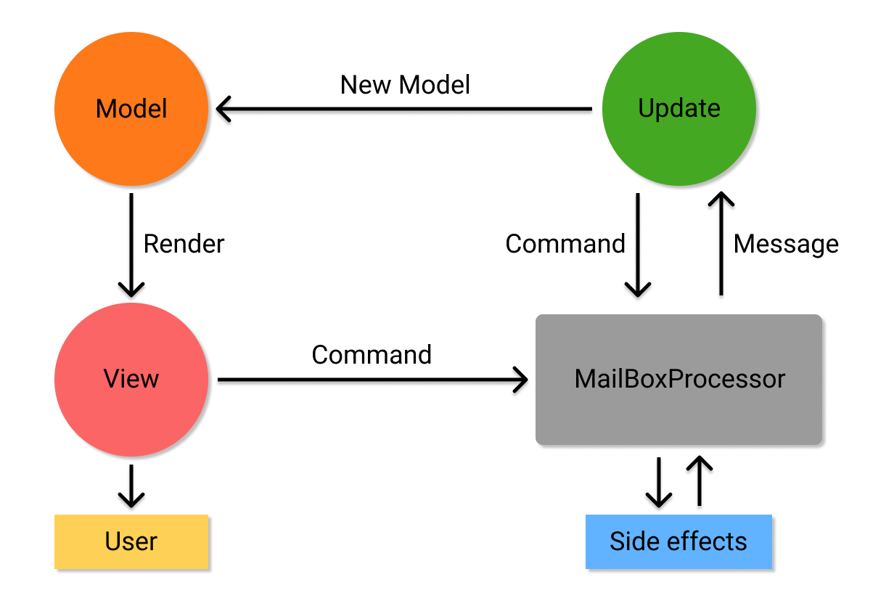
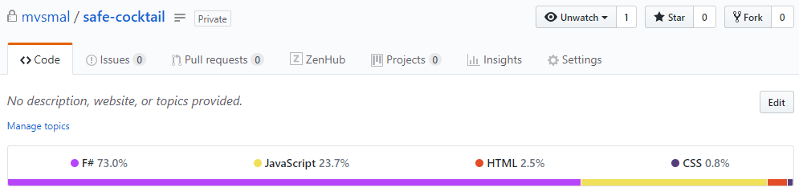

Web development with SAFE stack
Mikhail Smal @ F(by) 2019
My name is Mikhail and
I ❤️ F#
What about you?
Why F#
-
Functional language
- Immutability
- Pattern matching
- Static typing
- Algebraic data-types
- Domain Driven Design
Domain Modeling Made Functional
Scott Wlaschin
Why F# is the best enterprise language
https://fsharpforfunandprofit.com/posts/fsharp-is-the-best-enterprise-language/
Why F#
-
Functional language
- Immutability
- Pattern matching
- Static typing
- Algebraic data-types
- Domain Driven Design
- Cross-platform .NET Core
- Single language for Backend/Frontend
- Awesome community ️❤️
The SAFE stack is an open-source, free, flexible end-to-end, functional-first stack for cloud-ready web applications that emphasizes type-safe programming.
Saturn |
Azure |
Fable |
Elmish |
Saturn
A modern web framework that focuses on developer productivity, performance, and maintainabilityRings
- Kestrel and ASP.NET Core
- Giraffe
Moons
- Dapper
- Simple.Migrations
Alternatives
- Giraffe
- ASP.NET Core
- Suave
- Freya
Saturn framework
Heavily inspired by Elixir's Phoenix
Familiar abstractions:
application { }router (*scope*) { }controller { }
Saturn template
1: 2: |
|
Saturn cli-tool
1: 2: |
|
Microsoft Azure
- Top 3 Cloud hosting platforms
- Native .NET environment
Alternatives
- Amazon Web Services
(AWS) - Google Cloud Platform
(GCP)
- Any other hosting
SAFE in Docker
microsoft/dotnet:2.2-sdkmicrosoft/dotnet:2.2-aspnetcore-runtimemicrosoft/dotnet:2.2-runtime-microsoft/dotnet:2.2-sdk-alpinemicrosoft/dotnet:2.2-aspnetcore-runtime-alpinemicrosoft/dotnet:2.2-runtime-alpine
Fable
The compiler that emits JavaScript you can be proud of!
- F# -> JavaScript compiler
- JavaScript as runtime
- Simple interop with JavaScript
- ReactJS and React Native
- SSR w/o Node.js
Alternatives
- WebSharper
Fable compiler
F#
Fable
Babel
ECMAScript 5
Elmish
- Borrowed from Elm language
- MVU Architecture
- Hot module replacement
Model-View-Update
Client-Server communtication
Fable.Remoting
Type-safe communication layer for F# Apps
- RPC-style
- Adapters for all SAFE servers and more
Elmish.Bridge
A bridge between server and client using websockets
- Web sockets
- Bi-directional communication
SAFE Pre-requisites
- .NET Core SDK 2.x
- Node.js 8.x+
- Yarn/NPM
- FAKE 5 as a dotnet global tool
- Mono (for macOS/Linux only)
SAFE Template
1: 2: 3: 4: 5: 6: |
|
DEMO

Wrapping up
- Performance thanks to .NET Core
- Full-stack out-of-box
- Single type-safe functional language
QUESTIONS
???